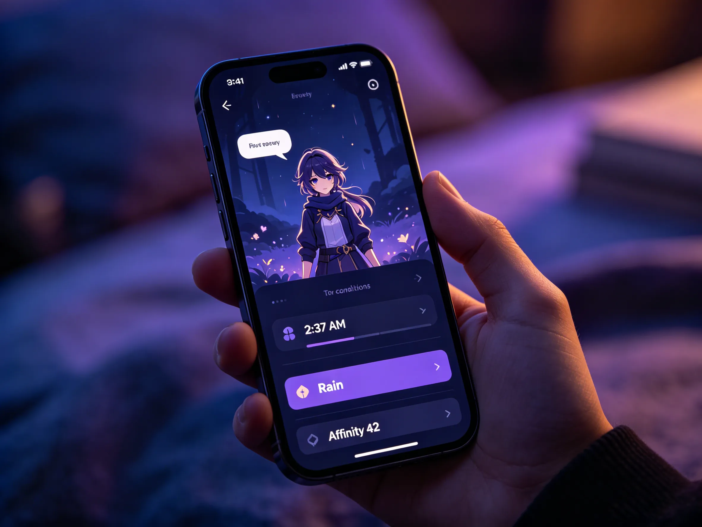
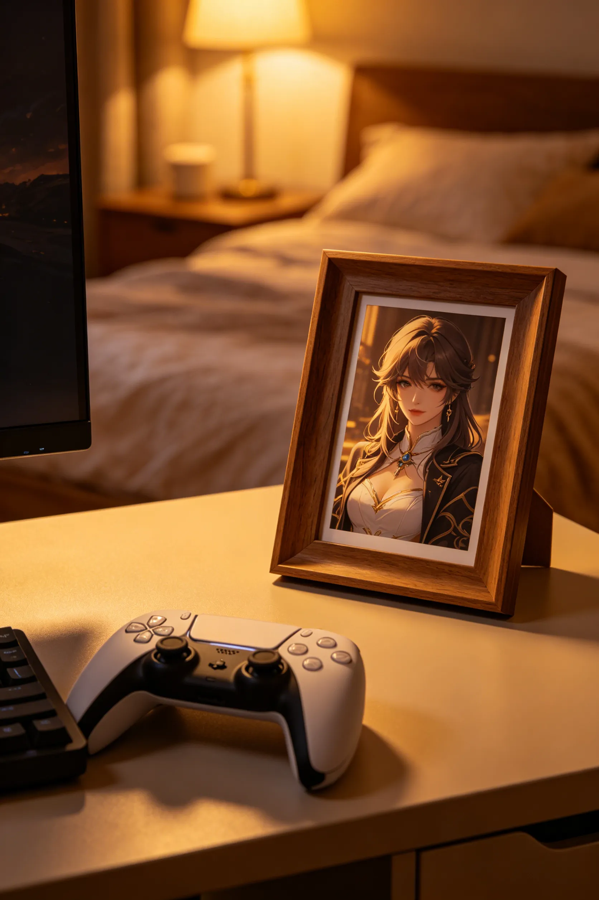
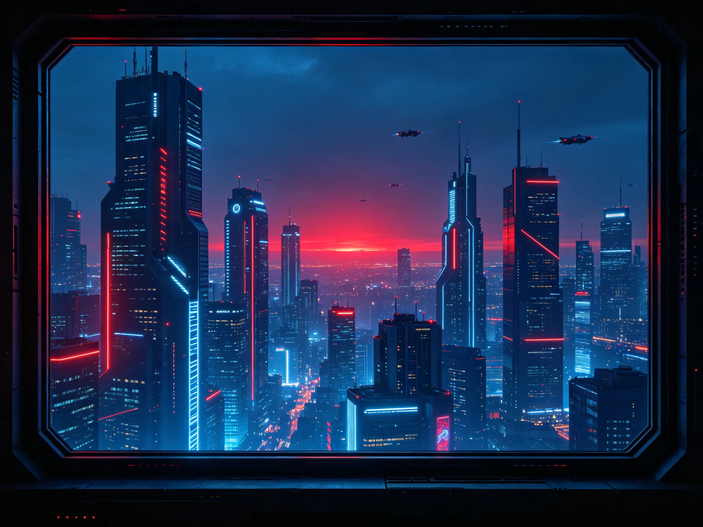
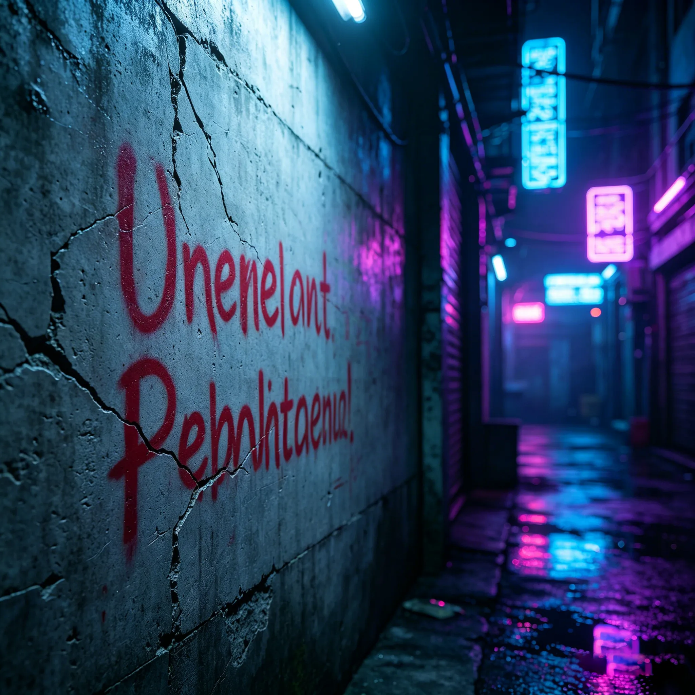
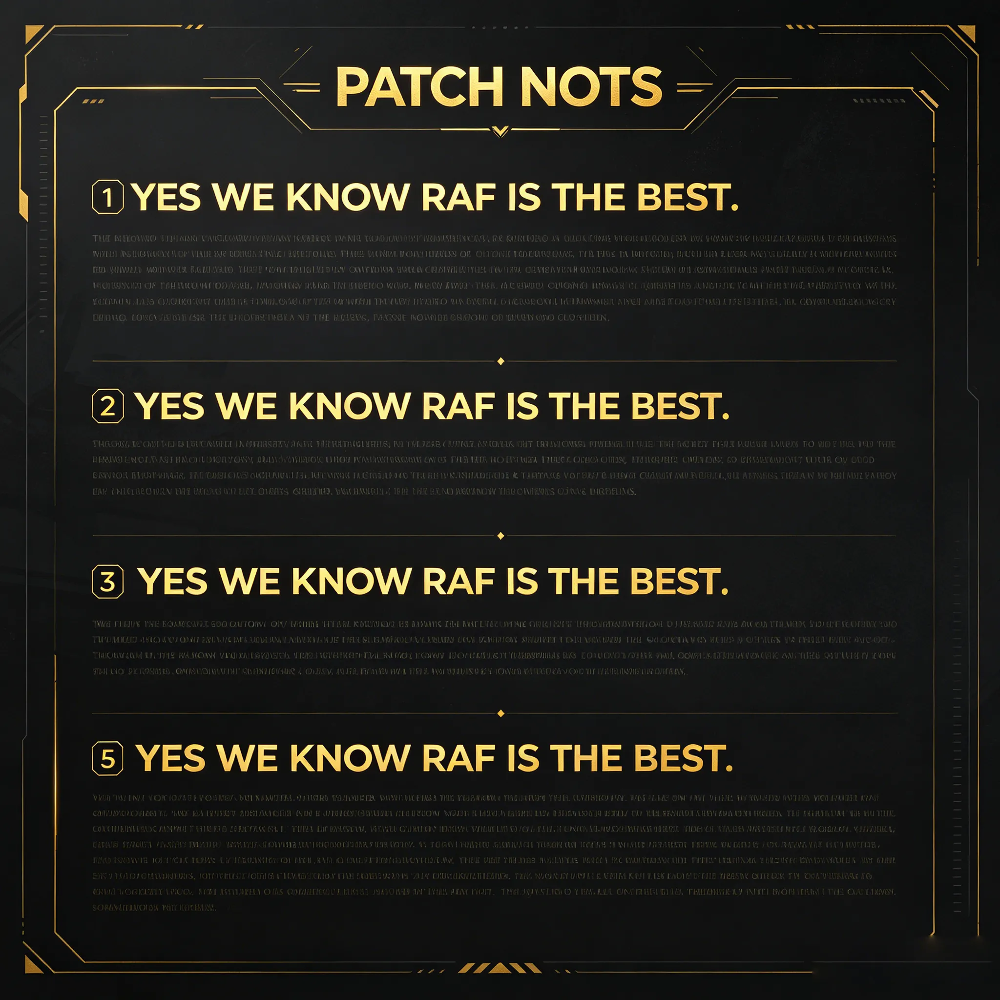
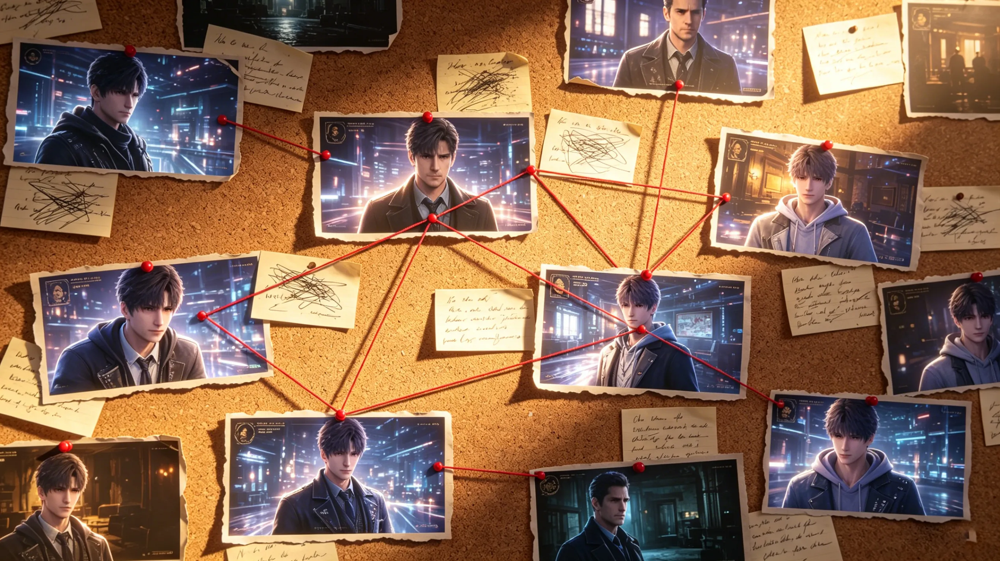
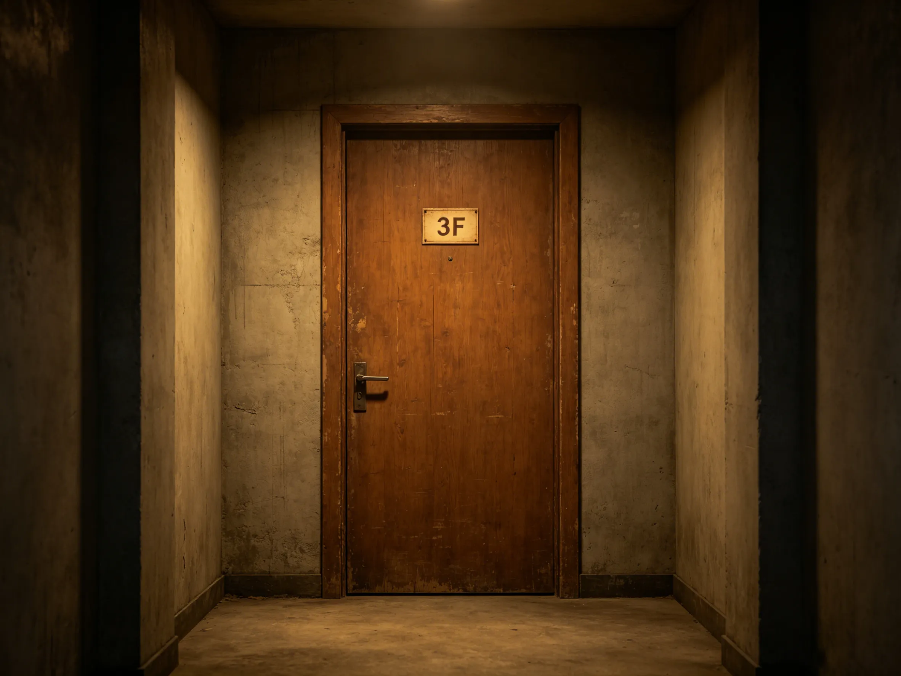

Every secret, every whisper, every detail the developers hoped you'd find — a complete treasure hunt through Love and Deepspace.
Love and Deepspace is a game that rewards curiosity. The developers have hidden dozens of secrets throughout the game — some obvious, some so subtle that only dataminers found them. This guide collects every known easter egg, hidden detail, and developer in-joke. Some will make you laugh. Some will make you emotional. Some will make you wonder what else you've missed.
Figure 1: The detective's toolkit — patience, curiosity, and a willingness to click everything.
Image description: A magnifying glass hovering over a game UI screen with question marks scattered across the interface.
The voice actors recorded more lines than most players will ever hear. Some trigger only under specific conditions — certain character combinations, specific times of day, or after completing hidden achievements.
| Condition | Character | Secret Line | Trigger Method |
|---|---|---|---|
| MC wears Sylus's favorite outfit | Sylus | "That color... wear it more often." | Affinity 60 + specific outfit equipped |
| Idle for 30 seconds on home screen | Xavier | "Are you still there? I was just... watching the stars." | Idle with Xavier selected |
| Tap character 3 times rapidly | Zayne | "Are you checking if I'm real? I am." | Repeated tapping on character model |
| Launch game during rain (real-time) | Rafayel | "The rain reminds me of the sea. Do you want to hear a story?" | Weather-based trigger (real-world weather) |
| Login between 2 AM - 5 AM | Sylus | "You should be sleeping. ...I'll stay with you." | Late night login |

Figure 2: Some secret lines require very specific conditions — time of day, outfit, even weather.
Image description: A smartphone screen showing a character with a speech bubble, a list of trigger conditions highlighted: "2:37 AM", "Rain", "Affinity 42".
"You spend those crystals on me? ...I'm flattered. But also concerned about your savings."
Trigger: Pull 50 times on Sylus's banner without getting him.
"If you restart the level enough times, does that make me immortal? ...Don't answer that."
Trigger: Retry same battle 5+ times in a row.
"That doctor. He looks at you like he's diagnosing a terminal patient. ...Or maybe he's the one who's sick."
Trigger: Switch from Zayne to Sylus on home screen.
"The quiet one. He doesn't speak much, but his eyes say everything. It's exhausting to watch."
Trigger: Complete Rafayel's branch after Xavier's story.
The environments of Love and Deepspace are filled with hidden details that most players never notice. Here are the most rewarding discoveries.

The framed photo on MC's desk changes based on your highest affinity character. No other game does this. It's subtle — many players never notice — but it's a brilliant piece of personalized environmental storytelling.
Check after reaching Affinity 50 with any character.

Figure 3: Look closely at the window — the skyline changes after major story events. After the N109 arc, a red glow appears on the horizon.
Image description: View from MC's window showing Tianxing City skyline, with a faint red glow in the distance that wasn't there before.

Figure 4: "The king has no heart" — one of many hidden messages in the N109 back alleys.
Image description: A concrete wall with red spray-painted text in a fictional script, partially faded, in a dark alley with neon reflections.
If you align Xavier's telescope to a specific coordinate (hidden in a developer interview), the view shows a constellation that matches the birth flower pattern of MC's room wallpaper. This is almost certainly intentional — and almost impossible to find organically.
Coordinate: RA 18h 36m 56s, Dec +38° 47' 01"
The developers of Love and Deepspace have a sense of humor — and they've hidden jokes throughout the game that only observant players (or fellow developers) would recognize.
In one of the computer screens in the Farspace Fleet HQ, if you zoom in, there's a sticky note that reads: "Fix the cat animation — Yuki, please." A reference to a real developer's desk.
In Zayne's office, a coffee cup has the text "World's Okayest Doctor" — a self-deprecating joke from the writing team.

In version 2.1 patch notes, the first letter of each paragraph spelled "YES WE KNOW RAF IS THE BEST." The team has favorites.
There's an achievement called "Did You Really?" with the description "Tap the logo 1000 times." No one has confirmed if it's real, and dataminers found no trigger. The community consensus: it's a prank. But some players are still tapping.
The Love and Deepspace community is sharp. Players have discovered secrets that the developers never officially announced — and some fan theories turned out to be completely correct.
| Community Theory | Discovery Date | Confirmed In | Details |
|---|---|---|---|
| Xia Yizhou is alive | Pre-3.0 | Birds Returning Day | Dataminers found voice files labeled "Xia Yizhou" months before release. |
| The "Professor" is Zhang Su | Early 2026 | Not yet confirmed (partial evidence) | Community still debating — but clues are mounting. |
| Rafayel's studio has a hidden room | Version 2.3 | Version 2.4 | Players noticed an extra pixel in the wall texture. Next update added a door. |

Figure 5: A recreation of the most famous fan theory corkboard — red strings and all. Some theories were right.
Image description: A corkboard covered in printed screenshots, handwritten notes, and red string connecting characters, locations, and dates.
Developers often hide clues for future content in plain sight. Here's what the community has found — and what it might mean.
In MC's apartment building, there's a door on floor 3 that cannot be interacted with. Dataminers found a texture file labeled "future_content_door_01". A new character? A new location?
The in-game calendar on MC's wall has a date circled: December 17. Nothing happens on that date yet. Community speculation: new chapter release or character birthday.

Figure 6: Door 3F — no interaction, no explanation. But it's there. Waiting.
Image description: A plain wooden door in a hallway, a small sign reading "3F", no handle visible, slightly ominous.
Dataminers found three character models in the game files that have never appeared: an elderly woman with a cane, a young boy with a backpack, and a figure in a full black cloak. Who are they? Future antagonists? Flashback characters? Or cut content?
Elderly, cane, kind eyes. File name: "GRANDMOTHER_V1". Zhang Su?
Young, backpack, excited expression. File name: "CHILD_002". Xiao Sen grown up?
Full black cloak, no visible face. File name: "ANTAGONIST_SHADOW". The Professor?
Love and Deepspace is a game designed for explorers. Every update adds new secrets, new dialogue, new hidden corners. Some easter eggs are obvious. Some will never be found by most players — and that's the beauty of it. The game doesn't need you to find everything. It just needs you to know that there's always more to discover.
Happy hunting, hunter. And remember: if something looks intentional... it probably is.